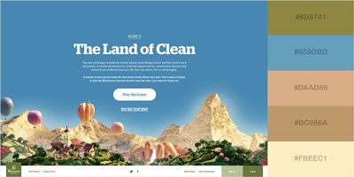

Color Scheme
One of the most powerful tools, when designing a website, is color.
A good color palette is crucial for online success.
Wise use of color on a website can attract the target audience.
It will exude professionalism, stir emotion, express meaning, and earn the loyalty of visitors.
People automatically connect colors to the brands and products they love.
Those who visit this website will be pleased with our product - which is information about the weather.
The reliable forecasts on Forecast For Fun will instill a sence of trust in them.
Our customers will return because they feel at home on our website.
The color theme for the Forecast For Fun weather website include the following colors:
- #8D8741
- #659DBD
- #DAAD86
- #BC986A
- #FBEEC1
References: https://visme.co/blog/website-color-schemes/
https://www.color-hex.com/color-palette/43173
https://studio1design.com/how-important-is-color-in-website-design/
Website Colors
The color scheme for the Forecast For Fun weather website is similar to those found in nature.
Visitors who will come to this site love the outdoors and will feel a connection to this color palette.
The cool sky blue and warm earth tones will speak peace and comfort to them.
This color combination will draw in those who love being out in nature.
It will entice them to go outside and have some fun!
One of the most important design aspects of a website is its colors.
Having the right color scheme will attract viewers.
It demonstrates a high-quality website and is pleasant to the eye.
The right colors send a strong message of professionalism.
Potential customers will take notice and return to Forecast For Fun for accurate weather forecasting.
Warm colors such as red, orange, and yellow send a message of warmth.
These sunny colors often bring with them feelings of joy and happiness.
Cool colors like blue, purple, and green are associated with the feelings of cold weather.
These colors create a professional and corporate look, stirring up emotions of trust and authority.
Neutral colors such as brown and gray don’t stir up much emotion, because they are neither hot nor cold.
Understanding the power of color and the emotion they invoke, allows the designer to relay a message without the use of words.
An experienced designer deliberately chooses a certain color scheme to attract the target audience.
Reference: https://www.webfx.com/blog/web-design/a-look-into-color-theory-in-web-design/